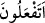
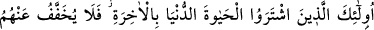
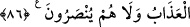

terkedip sâdece fidye meselesinde emre itâat etmişlerdir.
“Kitabın bir kısmına inanıp bir kısmını inkâr mı ediyorsunuz?” cümlesindeki
“hemze” inkâriyedir. Yâni yaptıklarının tasvîb edilmediğini gösterir. Hemze’nin
önündeki (fâ) harfi de makamın gerektirdiği “Yoksa siz bunu yapıyor, kitabın bir
bölümüne inanıyor musunuz?” mukadder cümlesindeki ( __WORD__ ) fiiline atıftır. Kitabın
inkâr ettikleri bölümünden maksad, katl ve yurttan sürme haramlığıdır. Oysa bir şeyin
cüz’üne inanmak, hepsinin Allah katından olduğu için diğer bölümüne de inanmayı
gerekli kılar. Onların kınanmasının nirengi noktası Tevrât’ın bir kısmına inandıkları
hâlde bir kısmını inkâr etmeleridir.
Aranızda bu şekilde “Tevrât’ın bir kısmına inanıp bir kısmını inkâr edenlerin cezâsı”
dünyâ hayatında rezil olmaktan başka bir şey değildir.
Rezâlet sefâletle bir arada olur, ki buna örnek Kurayza’nın esîr edilmesi ve
öldürülmesi, Benû Nadîr’in Şam’daki Erîhâ ve Ezruât bölgelerine sürülmeleridir.
Kimisi de bu “rezâleti” cizye alınması olarak te’vîl eder. “Dünyâ hayatında” bölümü
alçaklık kısmını niteler. Onların kitabın bir kısmına inanma gibi boş olan inançlarından
fayda beklemelerini ortadan kaldırmak ve sâdece bir kısmını inkâr etmelerinin bile
onları kurtarmaya etki edemiyeceğini açıklamak içindir.
Cezâların yerine getirildiği o “kıyâmet gününde de” azâbların en acısı olan cehennem
azâbına çarptırılırlar. Onların cehennemdeki azâbları dünyâdaki rezîlliklerinden ve
ondan önce gördükleri tüm acılardan daha beterdir. Çünkü dünyâdaki azâb geçicidir, bir
gün biter ama, âhıretteki azabları asla son bulmaz. Hadis-i şerifte de buyurulduğu gibi:
“Dünyâdaki ayıp (rezîllik) âhırettekinden çok daha hafîftir.” Yahûdîlerinki ise çok
daha kötü olacaktır. Çünkü onlar, günahın en büyüğünü işlemişlerdir.
Mesnevî’de der ki:
Çok zâlim olanın kapısı çok korkuludur,
Adâlet, zâlime kendi zulmünden beter cezâ vermektir.
Allah, onların münker nev’inden işledikleri içinde bu kötülüğün de bulunduğu her
kötülükten haberdardır. Yâni işledikleri amellerin hiçbirisi ona gizli kalmaz, onların
cezâsını âhırette verir. Burada günah işlemeye ağır bir tehdîd ve sert bir îkaz ve ona
itâata sonsuz bir müjde vardır. Çünkü o herşeye gücü yeten Zülcelâl’in herhangi bir
şeyden gâfil olabileceği düşünülemeyeceğinden, hakların tam lâyıkı vechiyle
sâhiblerine verileceği şüphesizdir.
86. İşte onlar, âhırete karşılık dünyâ hayatını satın alan kimselerdir. Bu yüzden ne